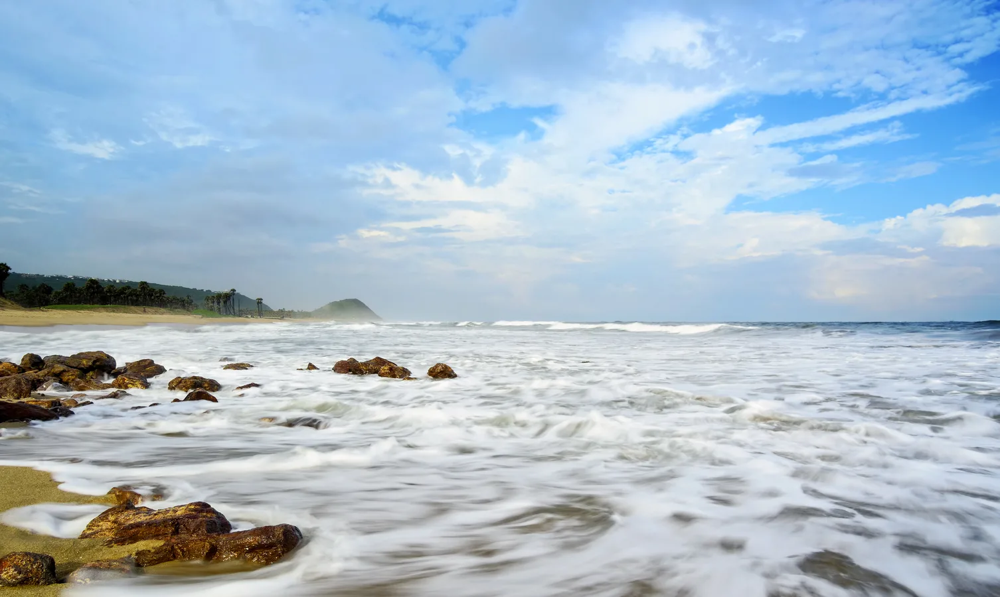
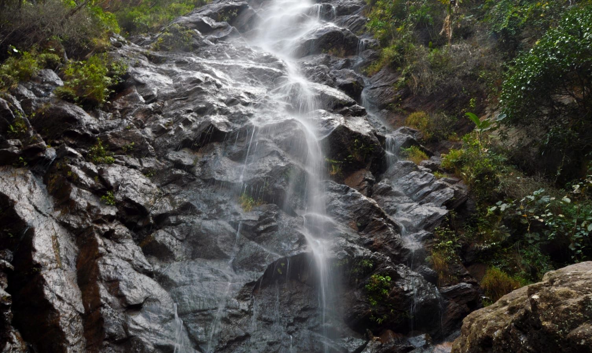
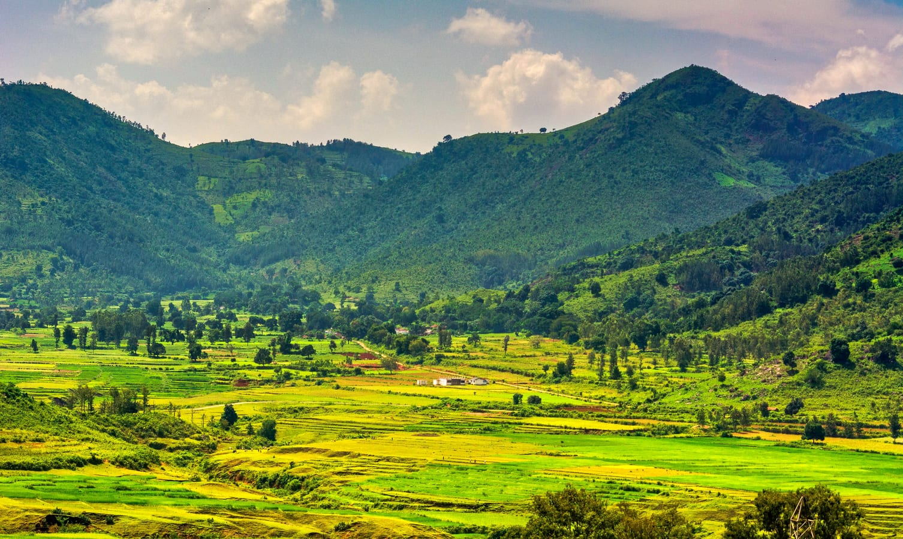
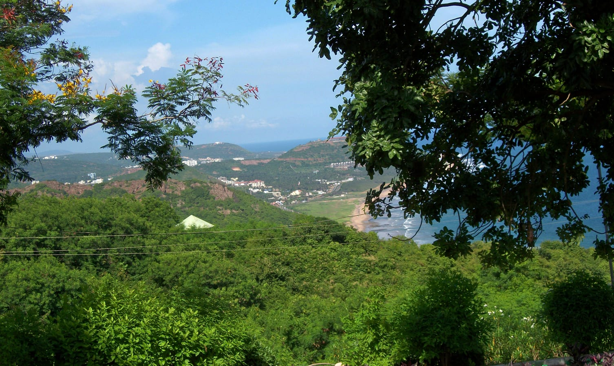
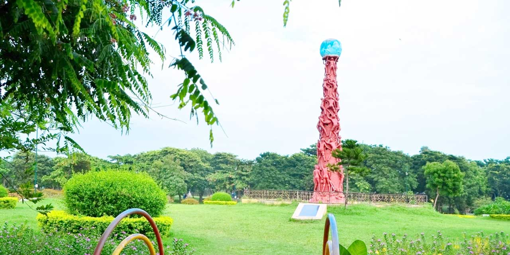
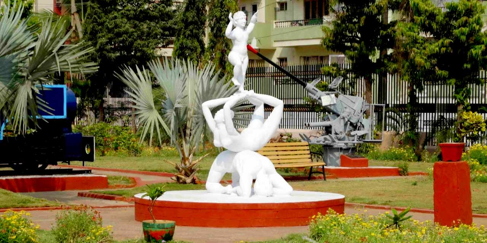

There is nothing like escaping to the seas from our busy, chaotic city lives. The feel of fresh air caressing our hair and warm waves splashing against our feet is one of the ideal forms of vacation. This exact dream like holiday destination can be yours in Visakhapatnam, also known as Vizag. A port city, it is known for its variety of industries, but beyond grey, concrete buildings are beautiful beaches, temples, caves and valleys.
|  | Renowned as the jewel of the east coast, Visakhapatnam is the Eastern Naval Command of Indian Navy. It serves to be an exciting holiday destination for nature lovers. Discover the landmarks of the enthralling city with our one day Visakhapatnam local sightseeing tour by Private Car. |
Visakhapatnam is a land of endless surprises. The city is a hub for all kinds of travellers, providing something unique for everyone. Originating from the River Gosthani, Katiki Waterfalls is situated very close to Borra Caves. It is the ideal place to visit for all nature loving, adventurous travelers. |
 |
|  | Araku is essentially a hill station, situated 120kms away from Visakhapatnam, which is rich in green fields, coffee plantations, picturesque landscapes and most importantly, wonderful weather. The valley is inhabited by tribes and it also contains a museum showcasing some of the best artwork by the localites. The journey to the valley by train is simply breath-taking. A must visit to all! |
The city is perpetually thronging with tourists, every one escaping to a few days of freedom and relief from hectic life. Imagine being able to visit a place that is nothing short of a treasure land. From history to culture to unlimited activities and unlimited places to visit, you have it all right here in Vizag.
The joys of Visakhapatnam lie in its subtle hints at history, culture with a whiff of modernism in the air. This perfect amalgamation of some of the best aspects of a holiday destination is what makes the city one of the best places to visit with ample places to discover.
|  |  |
|  |  |